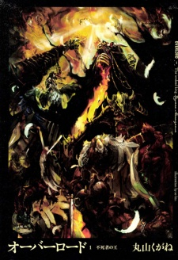

<section id="content">
	<div id="container">
		<div class="manga-new">
			
			<p class="manga-title">OverLord</p>
			<p class="manga-genre"><span class="genre">Genre:</span> Action, Comedy, Fantasy, Supernatural</p>
			<p class="manga-description"><span class="description">Description:</span> <span class="details">Overlord is a game that features a roleplaying multiplayer game that goes by name of Yggdrasil which is released in the year 2126. The game has gone on for a solid 12 year run and is now finally about to shut down leaving several players saddened.

			There is a guild inside the game named Aniz Ooal Gown(from Overlord manga) which is one of the strongest guilds ever, it used to once has 41 members out of which 37 have quit and now only 4 remain till the end an elder lich character named Momonga decides to remain as the guild leader and continue to play the game.</span> </p>
		</div>

		<div class="manga-new" >
			
			<p class="manga-title">That Time I Got Reincarnated as a Slime</p>
			<p class="manga-genre"><span class="genre">Genre:</span> Action, Comedy, Fantasy</p>
			<p class="manga-description"><span class="description">Description:</span> <span class="details">The ordinary Minami Satoru found himself dead after being stabbed by a slasher. It should have been the end of his meager 37 years, but he found himself deaf and blind after hearing a mysterious voice. He had been reincarnated into a slime!
			<br /> <br />
			While complaining about becoming the weak but famous slime and enjoying the life of a slime at the same time, Minami Satoru met with the Catastrophe-level monster 'Storm Dragon Verudora', and his fate began to move.</span> </p>
		</div>
	</div>
</section>
	